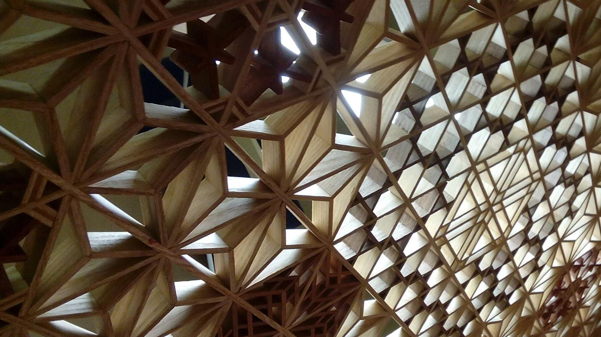
第15回
同じ形の細片を組み合わせて、幾何学の模様をつくる。
Sergei Sarin（2015年、組子細工）／CC BY-SA 4.0／Wikimedia Commons（横長に切り出した）
「ベクトルを (3, 1) と書く」とき、その 3 と 1 は何の数なのか。この回は、座標が基底という「ものさしの組」に対して決まる数であることを、線形結合・張る・一次独立・基底・次元・座標の順に、定義から1行ずつ組み立てる。次回以降の行列は、ここで作る言葉で読む。
第1回から続く約束どおり、新しい記号は緑色の枠（記号）で「①読み方 ②日本語での意味 ③省略していない書き方 ④どこで出会うか」を書く。この回は、総和記号 $\sum$ と添字の省略が積み重なる場所なので、線形結合の省略の段階で1段ずつ示し、以後の使用はそこへリンクする。
高校の数学Bで習った平面ベクトル・空間ベクトル、大学1年で習った「一次独立」「基底」も、仮定せずに一度は書く。覚えている部分は飛ばしてよい。すべての定義は、数値で一度手を動かしてから文字の式に進む。
連立一次方程式の解き方（掃き出し法）、行列式、ランクはそれぞれ第17回・第18回で扱う。この回で連立方程式が出てくる場所は、未知数が2つか3つの小さなものだけにして、本文の中で解く。第16回で行列の積を学ぶ前なので、「行列 $\times$ ベクトル」はこの回では記号の予告にとどめる。
最初に、この回で新しく説明する記号と、前の回で説明済みの記号を分けて並べる。右の列の「→」で説明のある場所へ飛べる。
| 記号 | 読み方 | ざっくりした意味 | 説明 |
|---|---|---|---|
| スカラー $c,\ c_1,\ \alpha$ | スカラー | ベクトルに掛ける、ただの実数 | →1.3 |
| ベクトル空間 $V$ | ベクトルくうかん | 足せて、数倍できて、その結果もまた仲間のもの全体 | →1.4 |
| $c_1\boldsymbol v_1+\cdots+c_k\boldsymbol v_k$（線形結合） | せんけいけつごう | ベクトルを数倍して足したもの | →2.1 |
| $\operatorname{span}\{\boldsymbol v_1,\dots,\boldsymbol v_k\}$ | スパン、はる | 線形結合で作れるものの全体 | →3.1 |
| 部分空間 $W\subseteq V$ | ぶぶんくうかん | 原点を通り、足しても数倍しても出られない部分 | →3.3 |
| 一次独立／一次従属 | いちじどくりつ／いちじじゅうぞく | 余分なベクトルがない／ある | →4.2 |
| 基底 $\{\boldsymbol b_1,\dots,\boldsymbol b_n\}$ | きてい | 座標を決めるための「ものさしの組」 | →5.1 |
| 標準基底 $\{\boldsymbol e_1,\dots,\boldsymbol e_n\}$ | ひょうじゅんきてい | $\mathbb R^n$ のいちばん普通の基底 | →5.2 |
| 座標 $[\boldsymbol v]_{\mathcal B}$ | ざひょう | 基底 $\mathcal B$ のもとでの数の組 | →5.4 |
| $\dim V$ | ディム・ブイ、じげん | 基底の本数 | →6.3 |
| $P=(\boldsymbol b_1\ \boldsymbol b_2\cdots)$（基底の取りかえの行列） | ピー | 基底ベクトルを列に並べた表 | →7.2 |
| 記号 | 意味 | 初出 |
|---|---|---|
| $=$、$:=$ | 等しい／左の名前を右の式で決める | 第1回、第1回 |
| 省略の段階（S0, S1, …） | 省略の度合いを段階で呼ぶ | 第1回 |
| $x_1$（添字） | 名前に番号をつける | 第1回 |
| $\in$、$\subseteq$ | 要素である／部分集合である | 第2回、第2回 |
| $\mathbb R$、$\mathbb R^n$ | 実数全体／実数 $n$ 個の組全体 | 第2回、第2回 |
| $\Rightarrow$、$\Leftrightarrow$ | ならば／同値 | 第2回、第2回 |
| $\forall$、$\exists$ | すべての／存在する | 第2回、第2回 |
| $f\colon A\to B$、全単射 | 関数、1対1で漏れのない対応 | 第3回、第3回 |
| $\displaystyle\sum_{i=1}^{k}$（総和）、ダミー添字 | 足し算の記号、足しながら消える添字 | 第4回、第4回 |
| $\delta_{ij}$（クロネッカーのデルタ） | $i=j$ なら1、そうでなければ0 | 第4回 |
| 太字 $\boldsymbol v$（ベクトル）、成分 $v_i$ | 数の組、その中の数 | 第5回、第5回 |
| $\boldsymbol 0$（零ベクトル） | 成分がすべて0のベクトル | 第5回 |
| $\boldsymbol e_i$（単位ベクトル）、$\boldsymbol a\cdot\boldsymbol b$（内積） | 長さ1のベクトル、成分どうしの積の和 | 第5回、第5回 |
| $m\times n$ 行列、$A_{ij}$ | 数の長方形の表、その成分 | 第5回、第5回 |
PHOTO 1｜現実
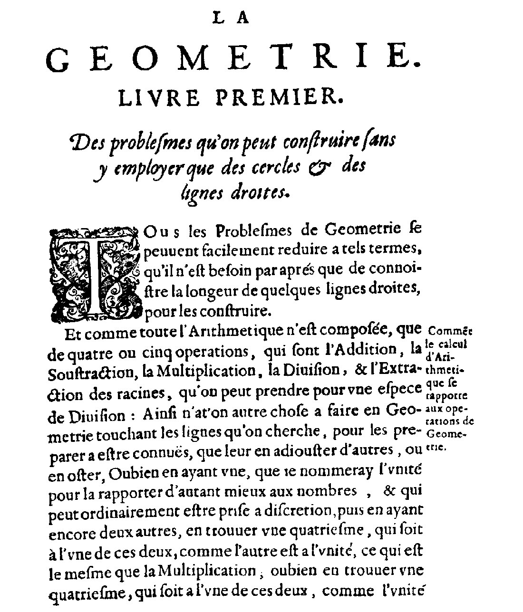
幾何の問題を、直線の長さを知ることに帰着させる、デカルト『幾何学』第1巻の冒頭の頁である。
ルネ・デカルト『La Géométrie』（1637年）／Public domain／Wikimedia Commons（縮小した）
MITATE 1｜見立て
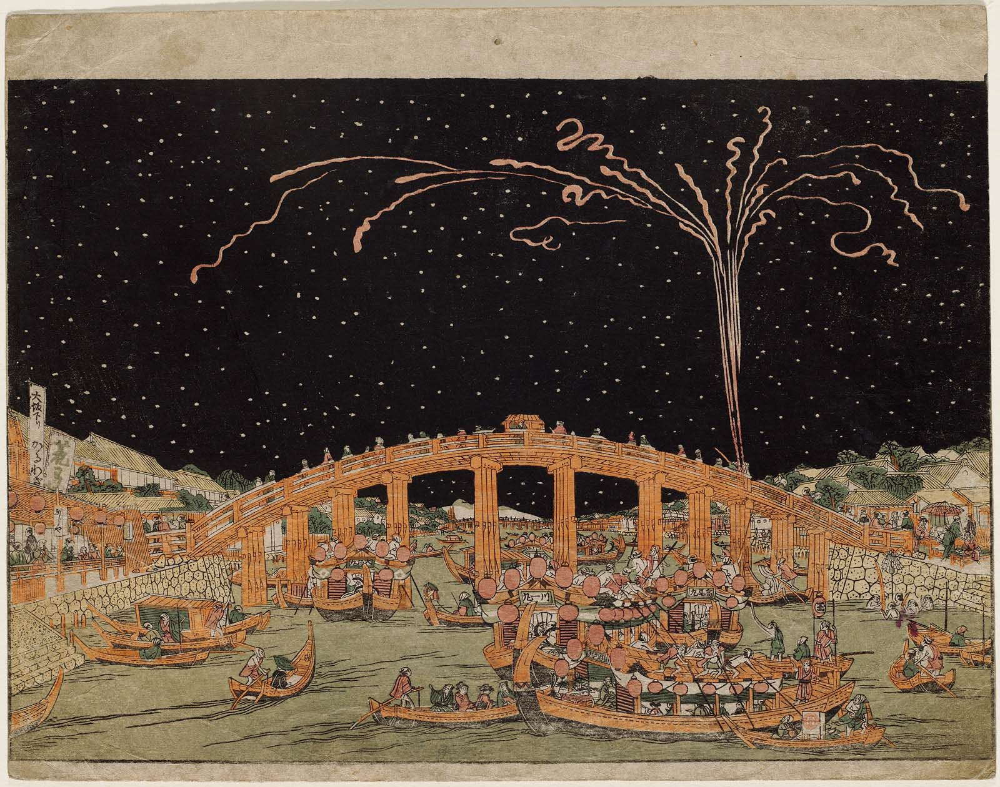
視点を一つに決めて、橋と川と花火を描いた浮絵である。
歌川豊春の浮絵『両国橋』（18世紀。Commons の題は「Shinpan uki-e - Tōto Ryōgokubashi hanka no zu」）／Public domain／Wikimedia Commons（縮小した）
平面上の矢印 $\boldsymbol v$ を $(3,\,1)$ と書く。この 3 と 1 は、何に対しての 3 と 1 だろうか。ふつうは「右向きの長さ1の矢印 $\boldsymbol e_1=(1,0)$ を3本、上向きの長さ1の矢印 $\boldsymbol e_2=(0,1)$ を1本」足した、という意味で読んでいる。式にすると
$$ \boldsymbol v = 3\,\boldsymbol e_1+1\,\boldsymbol e_2 = 3\,(1,0)+1\,(0,1) = (3,0)+(0,1) = (3,1). $$
つまり $(3,1)$ は「$\boldsymbol e_1$ と $\boldsymbol e_2$ というものさしの組を使って、何本ずつ足せば $\boldsymbol v$ になるか」の答えである。ものさしの組を変えれば、同じ矢印に別の数の組が対応する。たとえば $\boldsymbol b_1=(1,1)$、$\boldsymbol b_2=(1,-1)$ を使うと
$$ \boldsymbol v = 2\,\boldsymbol b_1+1\,\boldsymbol b_2 = 2\,(1,1)+1\,(1,-1) = (2,2)+(1,-1) = (3,1) $$
となり、数の組は $(2,1)$ になる。矢印は同じで、数の組だけが変わった。
図1.1 を見る。同じ矢印 v を、標準基底の目盛りと、別の基底の目盛りの両方に重ねた。
これまでの教材では、ベクトルを「数の並び」として扱ってきた（第5回）。しかし、機械や電気の現場では、座標軸の向きを回したり、固有モード（第20回で扱う、系が単独で振動する形）に合わせて軸を取りかえたりする。そのとき「数の組」と「矢印そのもの」を区別する言葉が必要になる。それがこの回の目的である。
この回で作る道具は、3つの問いに答える。
第2回のとおり、$\mathbb R^n$ は実数 $n$ 個の組 $(v_1,\dots,v_n)$ 全体の集まりである。その2つの要素 $\boldsymbol u=(u_1,\dots,u_n)$、$\boldsymbol v=(v_1,\dots,v_n)$ について、和と数倍を成分ごとに決める。
$$ \boldsymbol u+\boldsymbol v := (u_1+v_1,\ \dots,\ u_n+v_n),\qquad c\,\boldsymbol v := (c\,v_1,\ \dots,\ c\,v_n). $$
数値で一度やる。$\boldsymbol u=(1,2)$、$\boldsymbol v=(3,-1)$、$c=2$ のとき、$\boldsymbol u+\boldsymbol v=(1+3,\ 2+(-1))=(4,1)$、$c\,\boldsymbol v=(2\cdot3,\ 2\cdot(-1))=(6,-2)$。矢印で見ると、和は「$\boldsymbol u$ の先に $\boldsymbol v$ をつなぐ」、数倍は「向きはそのまま（$c$ が負なら反対向き）、長さを $|c|$ 倍」である。
図1.2 を見る。和は「先につなぐ」、数倍は「長さを c 倍」。
①読み方：「スカラー」。文字は $c$（「シー」）、$c_1$（「シー・いち」）、$\alpha$（「アルファ」）などを使う。
②日本語での意味：ベクトルに掛ける、ただの数（この教材では実数）。ベクトルの「向きと大きさ」ではなく、「何倍するか」だけを表す。
③省略していない書き方：「$c\in\mathbb R$（$c$ は実数全体の集まり $\mathbb R$ の要素）」と書くのが完全形。本文では「$c$ はスカラー」の一言に省略する。ベクトルは太字（$\boldsymbol v$）、スカラーは細字（$c$）で区別する（第5回の流派）。
④どこで出会うか：線形代数全般（ベクトルの数倍、固有値）、物理（質量・電荷などの大きさだけの量を「スカラー量」と呼ぶ）。
$\mathbb R^n$ のベクトルは、成分ごとの計算なので、実数の計算規則がそのまま引き継がれる。たとえば $\boldsymbol u+\boldsymbol v=\boldsymbol v+\boldsymbol u$ は、各成分で $u_i+v_i=v_i+u_i$ が成り立つからである。ところが、足せて数倍できるものは $\mathbb R^n$ だけではない。多項式（$2+3x-x^2$ のようなもの）も、足して数倍できる。そこで、「足せて数倍できて、次の規則を満たすもの」を一般にまとめて呼ぶ。
①読み方：「ブイ」と呼ぶ。「ベクトル空間 $V$」と言う。
②日本語での意味：「和」と「スカラー倍」が決まっていて、次の8つの規則が成り立つものの集まり $V$。その要素をベクトルと呼ぶ（矢印や数の組とは限らない）。
③省略していない書き方：$\boldsymbol u,\boldsymbol v,\boldsymbol w\in V$ とスカラー $c,d$ について、
④どこで出会うか：$\mathbb R^n$（この回の中心）、多項式の空間、連続関数の空間（フーリエ級数・微分方程式の解の空間。第36回）、$m\times n$ 行列の集まり（第16回）。
$\mathbb R^n$ では8つの規則のすべてが、成分ごとの実数の計算規則に帰着する。たとえば規則6の前半を成分で見ると、$c(u_i+v_i)=cu_i+cv_i$ で、これは実数の分配の規則そのものである。この回では、おもに $V=\mathbb R^n$ で数値を動かし、多項式の空間は 6.4 と 7.3 で例として扱う。
「ベクトル＝矢印」「ベクトル＝数の並び」は、ベクトル空間の1つの姿にすぎない。矢印と数の並びは、基底を1つ選ぶことで1対1に対応する（5.4）。定義の本体は「足せて数倍できて8つの規則を満たす」ことである。
PHOTO 2｜現実
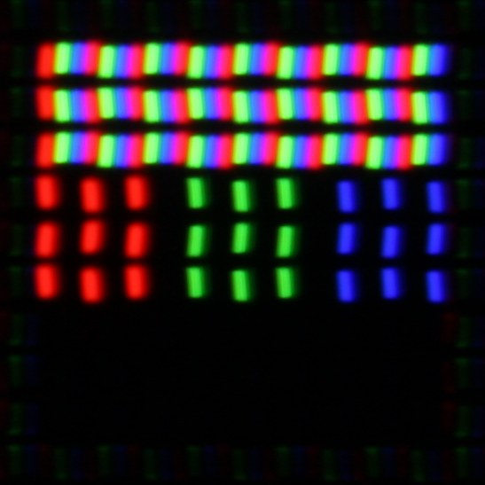
赤・緑・青の三つの点の明るさの組で、一つの画素の色が決まる。
D-Kuru（液晶画面の副画素）／CC BY-SA 3.0／Wikimedia Commons（縮小した）
MITATE 2｜見立て
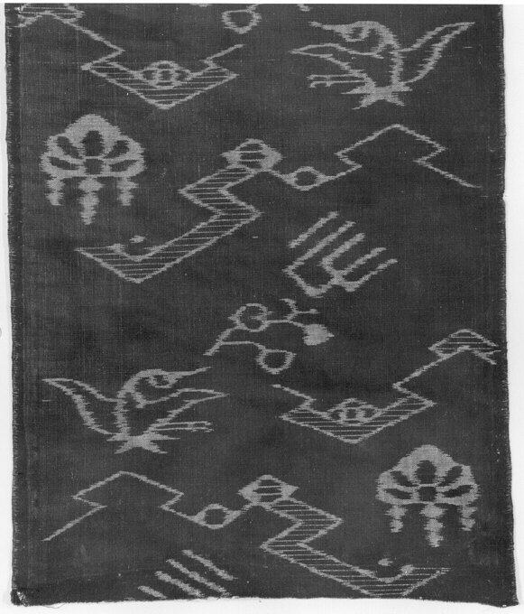
染めた糸の組み合わせで、布に文様が現れている。
文様を染めた布（19世紀、日本。メトロポリタン美術館蔵）／CC0／Wikimedia Commons（縮小した）
1.1 の「$3\boldsymbol e_1+1\boldsymbol e_2$」と「$2\boldsymbol b_1+1\boldsymbol b_2$」は、同じ形をしている。いくつかのベクトルをそれぞれ数倍して、全部足すという形である。この形に名前をつける。
①読み方：「シー・いち ブイ・いち プラス シー・に ブイ・に プラス … プラス シー・ケー ブイ・ケー」。名前は「せんけいけつごう」。「$\boldsymbol v_1,\dots,\boldsymbol v_k$ の線形結合」と言う。
②日本語での意味：$k$ 本のベクトル $\boldsymbol v_1,\dots,\boldsymbol v_k$ を、それぞれスカラー $c_1,\dots,c_k$ 倍して、全部足してできるベクトル。$c_1,\dots,c_k$ をその係数と呼ぶ。
③省略していない書き方：総和記号（第4回）を使うと
$$ c_1\boldsymbol v_1+c_2\boldsymbol v_2+\cdots+c_k\boldsymbol v_k=\sum_{i=1}^{k}c_i\boldsymbol v_i. $$
「…」は第4回のとおり曖昧さを残すので、厳密には右辺の $\sum$ が完全形である。係数 $c_i$ は実数ならなんでもよい（負でも0でもよい）。この回では、省略の段階を2.3で示す。
④どこで出会うか：連立一次方程式の解（第17回）、固有ベクトルの重ね合わせ（第20回）、フーリエ級数（関数 $\sin nx$、$\cos nx$ の線形結合）、微分方程式の一般解（解の重ね合わせ）、最小二乗法（第47回）。
$\boldsymbol a=(2,1)$、$\boldsymbol b=(-1,1)$ とする。これらの線形結合を作る。
① $2\boldsymbol a+1\boldsymbol b$：$2\boldsymbol a=(4,2)$、$1\boldsymbol b=(-1,1)$ を足して $(4-1,\ 2+1)=(3,3)$。
② $(-1)\boldsymbol a+3\boldsymbol b$：$(-2,-1)+(-3,3)=(-5,\,2)$。
③ $0\boldsymbol a+0\boldsymbol b=(0,0)=\boldsymbol 0$。
では逆に、$\boldsymbol w=(1,5)$ は $\boldsymbol a,\boldsymbol b$ の線形結合になるか。係数を $c_1,c_2$ として、$c_1\boldsymbol a+c_2\boldsymbol b=\boldsymbol w$ を成分に分ける。
④ 第1成分：$2c_1-c_2=1$。第2成分：$c_1+c_2=5$。
⑤ 2本を足す：$3c_1=6$、よって $c_1=2$。
⑥ 第2の式に代入：$2+c_2=5$、$c_2=3$。
⑦ 確かめ：$2\boldsymbol a+3\boldsymbol b=(4,2)+(-3,3)=(1,5)=\boldsymbol w$。したがって $\boldsymbol w$ は線形結合で作れる。
図2.1 を見る。w=(1,5) を、a と b の線形結合として作る道すじ。
図で見ると、線形結合は「$\boldsymbol a$ の矢印を $c_1$ 倍して、その先に $\boldsymbol b$ の矢印を $c_2$ 倍してつなぐ」と読める。図の見方は、1.2 の「和は先につなぐ」と同じである。
$\boldsymbol w=2\boldsymbol a+3\boldsymbol b$（$\boldsymbol a=(2,1)$、$\boldsymbol b=(-1,1)$）を例に、完全形から省略形までを1段ずつ並べる。一般の $k$ 本は括弧内に書く。
| 段階 | 書き方 | この段階で省いたもの | 省いても誤解が起きない理由 |
|---|---|---|---|
| S0（完全形） | $\boldsymbol w=2\,(2,1)+3\,(-1,1)=(2\cdot2+3\cdot(-1),\ 2\cdot1+3\cdot1)$ | なし。成分まで全部書く | — |
| S1 | $c_1\boldsymbol v_1+c_2\boldsymbol v_2+\cdots+c_k\boldsymbol v_k$ | 具体的な数と成分を文字にした。「…」で途中を省いた | $k$ が小さいうちは「…」の中身が読み取れる。ただし 第4回のとおり $k$ の大きさ次第で曖昧 |
| S2 | $\displaystyle\sum_{i=1}^{k}c_i\boldsymbol v_i$ | 「…」を $\sum$ に置いた。足す個数 $k$ は上端に残す | $i$ は 1 から $k$ まで動くダミー添字（第4回）で、何を足すか確定する |
| S3 | $\displaystyle\sum_{i}c_i\boldsymbol v_i$ | $i$ の範囲を省いた | $\boldsymbol v_i$ が $k$ 本しかなければ、$i$ の範囲は 1〜$k$ に決まる |
| S4（予告） | $A\boldsymbol c$（$A$ は $\boldsymbol v_i$ を列に並べた行列、$\boldsymbol c=(c_1,\dots,c_k)$） | $\sum$ も添字も全部省いた | 「行列×ベクトルは、列の線形結合」と第16回で定める。この回では使わない |
以後、S2 を標準とする。S3 を使うときは、「$i$ は 1 から $k$ まで」と添える。
図2.2 を見る。線形結合の書き方を、完全形から省略形まで1段ずつ並べた。
$\mathbb R^3$ で $\boldsymbol p=(1,0,0)$、$\boldsymbol q=(0,1,0)$ とする。$(1,1,1)$ はこれらの線形結合か。$c_1\boldsymbol p+c_2\boldsymbol q=(c_1,\ c_2,\ 0)$ なので、第3成分は必ず0。目標の第3成分は 1 なので、どんな係数でも作れない。
この例から分かるのは、「線形結合で作れるベクトルの全体」には限りがあるということである。その全体に名前をつけるのが次の節である。
図2.3 を見る。p と q の線形結合は、第3成分がいつも0なので、(1,1,1) には届かない。
①「線形結合は、係数の合計が1」ではない。そういう制限のついたものは「アフィン結合」「凸結合」と呼ぶ別の概念（第51回の最適化で出る）。②「係数は正でなければならない」こともない。③係数を全部0にしてもよい（結果は $\boldsymbol 0$）。
PHOTO 3｜現実
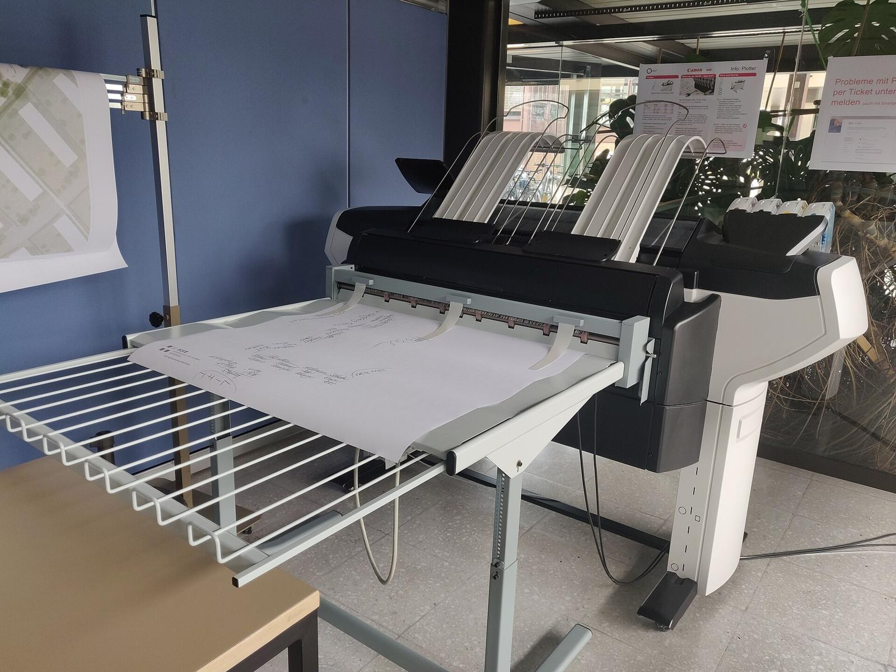
縦と横の二方向の動きの組み合わせで、紙面のどこにでも線が引ける、大判プロッタである。
UnderwhelmingToaster（2022年、大判のカラープロッタ）／CC0／Wikimedia Commons（縮小した）
MITATE 3｜見立て
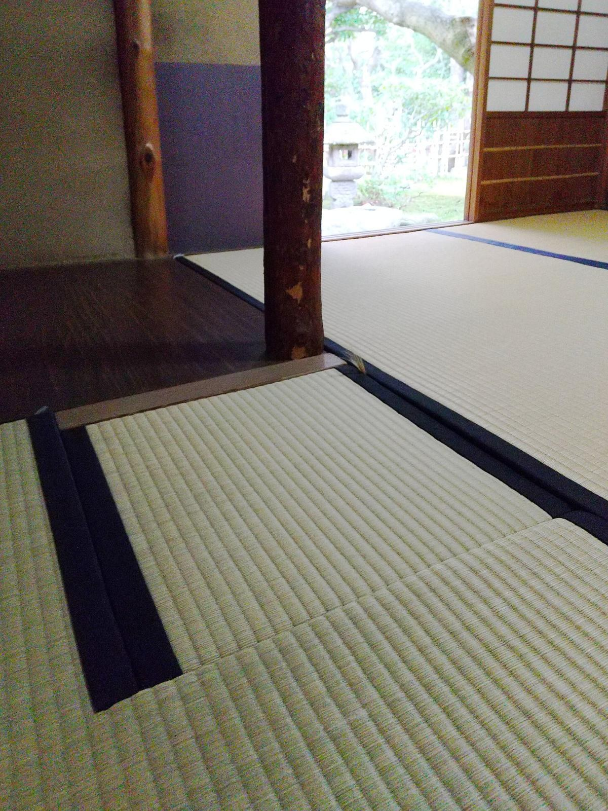
縦と横の二方向に敷き並べた畳が、床の全面を覆っている。
Hirho（2024年、福岡・松風庵の座敷）／CC BY-SA 4.0／Wikimedia Commons（縮小した）
①読み方：「スパン、ブイ・いち から ブイ・ケー」。日本語では「$\boldsymbol v_1,\dots,\boldsymbol v_k$ が張る空間」「生成する空間」と言う。
②日本語での意味：$\boldsymbol v_1,\dots,\boldsymbol v_k$ の線形結合で作れるベクトルを、すべて集めた集合。
③省略していない書き方：集合の書き方（第2回）で、
$$ \operatorname{span}\{\boldsymbol v_1,\dots,\boldsymbol v_k\}:=\left\{\ \sum_{i=1}^{k}c_i\boldsymbol v_i\ \middle|\ c_1,\dots,c_k\in\mathbb R\ \right\}. $$
「縦線の右」は、「$c_1,\dots,c_k$ が実数全体を動く」という条件である。
④どこで出会うか：連立一次方程式が解をもつか（右辺が「列が張る空間」に入るか、第17回）、行列の像 $\operatorname{im}$（第17回）、最小二乗法（第47回）、固有空間（第20回）。
(a) $\operatorname{span}\{(1,2)\}$：1本の線形結合は $c\,(1,2)=(c,2c)$。これは $y=2x$ の直線（原点を通る）。
図3.1 を見る。1本のベクトルの線形結合 c(1,2) を、c を変えながら打った。
(b) $\operatorname{span}\{(1,0,0),(0,1,0)\}$：$c_1(1,0,0)+c_2(0,1,0)=(c_1,c_2,0)$。第3成分が0の点すべて、つまり $xy$ 平面。2.4 の問いの答え（$(1,1,1)$ はここに入らない）がこれである。
図3.2 を見る。p=(1,0,0) と q=(0,1,0) の線形結合 c₁p+c₂q を、係数を整数に動かして打った。
(c) $\operatorname{span}\{\boldsymbol a,\boldsymbol b\}$、$\boldsymbol a=(2,1)$、$\boldsymbol b=(-1,1)$：2.2 のように、どんな $(x,y)\in\mathbb R^2$ でも $c_1\boldsymbol a+c_2\boldsymbol b=(x,y)$ を解く。
① 成分で書く：$2c_1-c_2=x$、$c_1+c_2=y$。
② 足す：$3c_1=x+y$、$c_1=\dfrac{x+y}{3}$。
③ 第2式に入れる：$c_2=y-c_1=y-\dfrac{x+y}{3}=\dfrac{3y-x-y}{3}=\dfrac{2y-x}{3}$。
④ 確かめ：$2c_1-c_2=\dfrac{2x+2y-2y+x}{3}=x$、$c_1+c_2=\dfrac{x+y+2y-x}{3}=y$。
どんな $(x,y)$ でも係数が1通りに求まったので、$\operatorname{span}\{\boldsymbol a,\boldsymbol b\}=\mathbb R^2$（平面全体）。たとえば $(x,y)=(1,5)$ なら $c_1=2$、$c_2=3$ で、2.2 と一致する。
図3.3 を見る。a と b の整数係数の線形結合 c₁a+c₂b を、平面に打った。
(a)(b)(c) の結果を並べると、「直線」「平面」「平面全体」。どれも原点を通り、足しても数倍してもはみ出さないという共通の性質がある。この性質をもつ集まりに名前をつける。
①読み方：「ダブリュー は ブイ の部分空間」。$\subseteq$ は第2回の「部分集合」。
②日本語での意味：ベクトル空間 $V$ の中の集まり $W$ で、$W$ の中のものを足しても数倍しても $W$ から出ず、$\boldsymbol 0$ を含むもの。
③省略していない書き方：$W\subseteq V$ が部分空間であるとは、次の3つがすべて成り立つこと。
④どこで出会うか：行列の核・像（第17回）、固有空間（第20回）、同次線形微分方程式の解の全体（応用数学Ⅰの重ね合わせの原理）、拘束条件のついた力学系の動ける向き。
確かめ（直線 $y=2x$）：$\boldsymbol u=(s,2s)$、$\boldsymbol v=(t,2t)$ なら、$\boldsymbol u+\boldsymbol v=(s+t,\ 2s+2t)=(s+t,\ 2(s+t))$ は $y=2x$ の上。$c\boldsymbol u=(cs,2cs)=(cs,\ 2(cs))$ もその上。$\boldsymbol 0=(0,0)$ もその上。
反例（直線 $y=2x+1$）：原点 $(0,0)$ は $0=2\cdot0+1$ を満たさないので、$\boldsymbol 0\notin W$。そのうえ、$(0,1)$ と $(1,3)$ はこの直線上にあるが、和 $(1,4)$ は $2\cdot1+1=3\neq4$ なので、直線の式を満たさず、直線の外。条件1も条件2も崩れる。
図3.4 を見る。部分空間の3条件（原点を含む・和で出ない・数倍で出ない）を、直線2本で確かめた。
$\operatorname{span}\{\boldsymbol v_1,\dots,\boldsymbol v_k\}$ は、$V$ の部分空間である。
$W=\operatorname{span}\{\boldsymbol v_1,\dots,\boldsymbol v_k\}$ とおく。部分空間の3条件を1つずつ確かめる。
① 条件1：係数をすべて0にすると $\sum_{i=1}^k0\cdot\boldsymbol v_i=\boldsymbol 0$。これは線形結合なので $\boldsymbol 0\in W$。
② 条件2：$\boldsymbol u,\boldsymbol v\in W$ とする。定義より、$\boldsymbol u=\sum_{i=1}^kc_i\boldsymbol v_i$、$\boldsymbol v=\sum_{i=1}^kd_i\boldsymbol v_i$ と書ける。
③ 足す：$\boldsymbol u+\boldsymbol v=\sum_{i=1}^kc_i\boldsymbol v_i+\sum_{i=1}^kd_i\boldsymbol v_i=\sum_{i=1}^k(c_i+d_i)\boldsymbol v_i$。
④ 右辺は係数 $c_i+d_i$ の線形結合なので、$\boldsymbol u+\boldsymbol v\in W$。
⑤ 条件3：$c\in\mathbb R$ として、$c\boldsymbol u=c\sum_{i=1}^kc_i\boldsymbol v_i=\sum_{i=1}^k(cc_i)\boldsymbol v_i$。
⑥ 右辺は係数 $cc_i$ の線形結合なので、$c\boldsymbol u\in W$。 $\blacksquare$
$\boldsymbol a=(1,2)$、$\boldsymbol b=(2,4)$ の2本の span は、$\boldsymbol b=2\boldsymbol a$ なので $c_1\boldsymbol a+c_2\boldsymbol b=(c_1+2c_2)\boldsymbol a$ で、直線 $y=2x$ にすぎない。1本の $\boldsymbol a$ だけで足りるのに、$\boldsymbol b$ は余分だった。ものさしの組には、こうした余分がない組を選びたい。「余分がない」を、式で言い切るのがこの節である。
「$\boldsymbol b$ が余分」とは「$\boldsymbol b$ が他の線形結合で書ける」、すなわち $\boldsymbol b=2\boldsymbol a$、移項して $2\boldsymbol a-\boldsymbol b=\boldsymbol 0$ ということ。この右辺 $\boldsymbol 0$ の形が、次の定義の鍵になる。
図4.1 を見る。2本のベクトルが「一直線上か、そうでないか」が、従属と独立の違いである。
①読み方：「いちじどくりつ」「いちじじゅうぞく」。「線形独立」「線形従属」とも言う（同じ意味。流派の違いは下の枠）。
②日本語での意味：ベクトルの組が一次独立とは、「線形結合が零ベクトルになるのは、係数がすべて0のときに限る」こと。一次従属とは、「係数のうち少なくとも1つが0でないのに零ベクトルになる線形結合がある」こと。
③省略していない書き方：$\boldsymbol v_1,\dots,\boldsymbol v_k\in V$ が一次独立であるとは、
$$ \sum_{i=1}^{k}c_i\boldsymbol v_i=\boldsymbol 0\ \Longrightarrow\ c_1=c_2=\cdots=c_k=0 $$
が、すべての $c_1,\dots,c_k\in\mathbb R$ について成り立つこと（$\Rightarrow$と$\forall$）。一次従属は、この否定：$\exists\,(c_1,\dots,c_k)\neq(0,\dots,0)$ で $\sum c_i\boldsymbol v_i=\boldsymbol 0$ となるものが存在する（$\exists$）。
④どこで出会うか：基底の条件（第5節）、連立方程式の解が1通りか（第17回）、行列の逆行列が存在するか（第16〜18回）、固有ベクトルの数（第20回）、関数 $\sin x,\cos x,e^x$ などが独立か（微分方程式のロンスキアン）。
「一次独立（日本の教科書）」＝「線形独立」＝ linearly independent。「一次従属」＝「線形従属」＝ linearly dependent。意味は同じで、ただし本教材では「一次」を標準にする。また、「$\Longrightarrow$ の左は零ベクトルを作る式」であって、「$\sum c_i\boldsymbol v_i=\boldsymbol w$（$\boldsymbol w\neq\boldsymbol 0$）」ではない。右辺が $\boldsymbol 0$ なのが本質である。
なぜ「零ベクトルを作る式」で独立を定義するのか。4.1 の例で、$\boldsymbol a,\boldsymbol b$ が従属なのは、$2\boldsymbol a-\boldsymbol b=\boldsymbol 0$ という係数 $(2,-1)\neq(0,0)$ の零の作り方があるからだった。この種類の式があれば、そのうちの係数が0でない1本を、他の線形結合で書き直せる（次の定理）。
$\boldsymbol v_1,\dots,\boldsymbol v_k$ が一次従属 $\Leftrightarrow$ ある $j$ について、$\boldsymbol v_j$ が残りの $\boldsymbol v_i$（$i\neq j$）の線形結合で書ける。
（$\Rightarrow$）一次従属なら、$\sum_{i=1}^kc_i\boldsymbol v_i=\boldsymbol 0$ で、$c_j\neq0$ となる $j$ がある。
① $c_j\boldsymbol v_j$ を右辺に移す：$c_j\boldsymbol v_j=-\sum_{i\neq j}c_i\boldsymbol v_i$。
② 両辺を $c_j$ で割る（$c_j\neq0$ だから割れる）：$\boldsymbol v_j=\sum_{i\neq j}\left(-\dfrac{c_i}{c_j}\right)\boldsymbol v_i$。右辺は他のベクトルの線形結合。
（$\Leftarrow$）$\boldsymbol v_j=\sum_{i\neq j}d_i\boldsymbol v_i$ と書けるなら、③ 移項して $\boldsymbol v_j-\sum_{i\neq j}d_i\boldsymbol v_i=\boldsymbol 0$。④ 左辺の $\boldsymbol v_j$ の係数は $1\neq0$。したがって係数がすべて0ではない零の作り方があり、一次従属。 $\blacksquare$
(a) $\boldsymbol v_1=(1,2)$、$\boldsymbol v_2=(3,4)$。零を作る式 $c_1\boldsymbol v_1+c_2\boldsymbol v_2=\boldsymbol 0$ を成分で書く。
① $c_1+3c_2=0$、$2c_1+4c_2=0$。
② 第1式から $c_1=-3c_2$。
③ 第2式に入れる：$2(-3c_2)+4c_2=-6c_2+4c_2=-2c_2=0$。よって $c_2=0$。
④ すると $c_1=-3\cdot0=0$。零を作る式は $c_1=c_2=0$ の1通りだけ。一次独立。
図4.2 を見る。一次独立の確かめ方を、(1,2) と (3,4) で1行ずつたどる。
(b) $\boldsymbol v_1=(1,2)$、$\boldsymbol v_2=(2,4)$。① $c_1+2c_2=0$、$2c_1+4c_2=0$。② 第2式は第1式の2倍で、実質1本の式。③ たとえば $c_2=-1$ とすると $c_1=2$。確かめ：$2(1,2)+(-1)(2,4)=(2-2,\ 4-4)=(0,0)$。係数 $(2,-1)\neq(0,0)$ で零が作れた。一次従属。
(c) $\mathbb R^3$ の $(1,2,3)$、$(4,5,6)$、$(7,8,9)$。零を作る式を探す。成分で $c_1+4c_2+7c_3=0$、$2c_1+5c_2+8c_3=0$、$3c_1+6c_2+9c_3=0$。第2式から第1式を引くと $c_1+c_2+c_3=0$。第3式から第2式を引くと $c_1+c_2+c_3=0$。同じ式が出たので、独立な式は実質2本、未知数は3つ。たとえば $c_3=1$ とおくと、$c_1+c_2=-1$ と $c_1+4c_2=-7$ から $3c_2=-6$、$c_2=-2$、$c_1=1$。確かめ：$1\cdot(1,2,3)-2\cdot(4,5,6)+(7,8,9)=(1-8+7,\ 2-10+8,\ 3-12+9)=(0,0,0)$。一次従属。（見た目には分かりにくいが、3本のうち1本は余分である。）
(d) 1本だけ $\{\boldsymbol v\}$：$c\boldsymbol v=\boldsymbol 0$ で $\boldsymbol v\neq\boldsymbol 0$ なら、$c=0$ しか許されない。一次独立。$\boldsymbol v=\boldsymbol 0$ なら $c=5$ でも零になるので一次従属。零ベクトルを含む組は、いつでも一次従属である。
2本の場合は特に簡単で、「どちらかがもう一方のスカラー倍なら従属、そうでなければ独立」と判定できる（上の定理で、残りが1本の線形結合＝その1本のスカラー倍）。3本以上のときは、(c) のように連立方程式で調べるか、第18回の行列式を使う。
図4.3 を見る。3次元で3本のベクトルが「同じ平面にあるか」で、独立か従属かが決まる。
①「どの2本も平行でなければ、一次独立」は誤り。(c) の3本は、どの2本も平行ではないが、3本まとめては従属である。②「一次独立＝直交」は誤り。直交すれば独立だが、$(1,0)$ と $(1,1)$ は直交しないのに独立。③「$\boldsymbol v_1,\boldsymbol v_2$ が独立」は個々の性質ではなく、組の性質である。
PHOTO 4｜現実
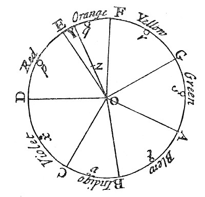
七つの色を円周に並べ、混ぜる割合で中間の色を決める、ニュートンの色円である。
アイザック・ニュートン『光学』の色円／Public domain／Wikimedia Commons（縮小した）
MITATE 4｜見立て
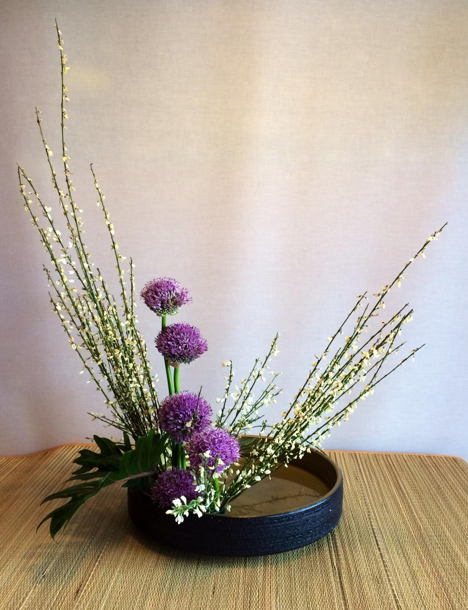
少数の枝と花の取り合わせで、ひとつの姿をつくる。
Gryffindor（2015年、嵯峨御流の盛花）／CC BY-SA 4.0／Wikimedia Commons（縮小した）
①読み方：「きてい」。組の名前は $\mathcal B$（「ビー」の飾り文字）。$\boldsymbol b_1,\dots,\boldsymbol b_n$ は「ビー・いち から ビー・エヌ」。
②日本語での意味：ベクトル空間 $V$ の「ものさしの組」。次の2つを両方満たす：(i) $V$ のベクトルは全部この組の線形結合で作れる（張る）。(ii) 組は一次独立（余分がない）。
③省略していない書き方：(i) $\operatorname{span}\{\boldsymbol b_1,\dots,\boldsymbol b_n\}=V$。(ii) $\sum_{i=1}^nc_i\boldsymbol b_i=\boldsymbol 0\Rightarrow c_1=\cdots=c_n=0$。
④どこで出会うか：座標軸の取りかえ（回転・固有モード）、フーリエ級数（$\sin nx,\cos nx$ を基底と見る）、行列の対角化（第21回）、有限要素法の形状関数。
(i) だけでは余分が混ざり（3.2(b) の $\{(1,0,0),(0,1,0),(1,1,0)\}$ は $xy$ 平面を張るが従属）、(ii) だけでは足りない（$\{(1,0)\}$ は独立だが、$\mathbb R^2$ を張らない）。両方を満たすとき、不足も余分もないちょうどのものさしになる。
図5.1 を見る。「張る」と「一次独立」の片方だけでは、基底にならない。
①読み方：「イー・いち から イー・エヌ」。「ひょうじゅんきてい」。
②日本語での意味：$\mathbb R^n$ で「$i$ 番目の成分だけ1、ほかは0」のベクトルを並べた基底。第5回の単位ベクトルの組と同じ。
③省略していない書き方：$\boldsymbol e_i$ の第 $j$ 成分を $(\boldsymbol e_i)_j$ と書くと、クロネッカーのデルタで $(\boldsymbol e_i)_j=\delta_{ij}$。具体的に $\mathbb R^3$ なら $\boldsymbol e_1=(1,0,0)$、$\boldsymbol e_2=(0,1,0)$、$\boldsymbol e_3=(0,0,1)$。電磁気学・機械力学で $\hat{\boldsymbol x},\hat{\boldsymbol y},\hat{\boldsymbol z}$（あるいは $\boldsymbol i,\boldsymbol j,\boldsymbol k$）と書くものと同じである。
④どこで出会うか：座標表示 $\boldsymbol v=\sum v_i\boldsymbol e_i$（下記）、行列の単位行列 $I$ の列（第16回）、ベクトル解析（第23回以降）。
$\{\boldsymbol e_1,\dots,\boldsymbol e_n\}$ が $\mathbb R^n$ の基底であることを、(i)(ii) の順に確かめる。
① (i) 張る：$\boldsymbol v=(v_1,\dots,v_n)\in\mathbb R^n$ について、$\sum_{i=1}^nv_i\boldsymbol e_i$ の第 $j$ 成分は $\sum_{i=1}^nv_i\delta_{ij}=v_j$（$\delta_{ij}$ は $i=j$ のときだけ1）。したがって $\boldsymbol v=\sum_{i=1}^nv_i\boldsymbol e_i$。
② (ii) 独立：$\sum_{i=1}^nc_i\boldsymbol e_i=\boldsymbol 0$ の第 $j$ 成分は $c_j$。これが0なので、すべての $j$ で $c_j=0$。 $\blacksquare$
この確かめから、$\boldsymbol v$ の成分 $v_i$ は、標準基底に対する係数であることが分かる。1.1 の「$(3,1)$ とは $3\boldsymbol e_1+1\boldsymbol e_2$ のこと」の一般形である。
図5.2 を見る。成分 (2,3,1) は、標準基底 e₁, e₂, e₃ を何本ずつつなぐかの数である。
基底を決めると、どのベクトルも係数の組で書ける（張るから）。その係数の組が1通りしかないことは、独立から出る。これがなければ「座標」という言葉は使えない。
$\{\boldsymbol b_1,\dots,\boldsymbol b_n\}$ が $V$ の基底ならば、$V$ の任意のベクトル $\boldsymbol v$ に対して、$\boldsymbol v=\sum_{i=1}^nc_i\boldsymbol b_i$ となる係数の組 $(c_1,\dots,c_n)$ がちょうど1つ存在する。
① 存在：基底の条件(i)（張る）による。
② 一意性：$\boldsymbol v=\sum_{i=1}^nc_i\boldsymbol b_i$ と $\boldsymbol v=\sum_{i=1}^nd_i\boldsymbol b_i$ の2通りに書けたとする。
③ 引く：$\boldsymbol 0=\boldsymbol v-\boldsymbol v=\sum_{i=1}^nc_i\boldsymbol b_i-\sum_{i=1}^nd_i\boldsymbol b_i=\sum_{i=1}^n(c_i-d_i)\boldsymbol b_i$。
④ 右辺は $\boldsymbol b_i$ の線形結合で、値が $\boldsymbol 0$。基底の条件(ii)（一次独立）により、すべての係数が0：$c_i-d_i=0$。
⑤ つまり、すべての $i$ で $c_i=d_i$。2通りは同じ組。 $\blacksquare$
数値で確かめる。$\mathcal B=\{(1,2),(3,4)\}$（4.3(a) で独立と確かめた）、$\boldsymbol v=(5,6)$。$c_1(1,2)+c_2(3,4)=(5,6)$ を成分に分けて $c_1+3c_2=5$、$2c_1+4c_2=6$。第1式から $c_1=5-3c_2$。第2式に入れて $10-6c_2+4c_2=6$、$-2c_2=-4$、$c_2=2$。$c_1=5-6=-1$。確かめ：$-(1,2)+2(3,4)=(-1+6,\ -2+8)=(5,6)$。解は $(c_1,c_2)=(-1,2)$ ただ1つ。
図5.3 を見る。基底 {(1,2),(3,4)} に対して v=(5,6) を作る係数は、(−1, 2) のただ1通りである。
①読み方：「ブイの、基底ビーに関する座標」。
②日本語での意味：基底 $\mathcal B$ を決めたとき、$\boldsymbol v$ を線形結合で作る係数の組。矢印そのものではなく「何本ずつ使うか」のレシピ。
③省略していない書き方：基底は順序つき（$\boldsymbol b_1$ が1番目、…）とする。$\boldsymbol v=\sum_{i=1}^nc_i\boldsymbol b_i$ のとき、
$$ [\boldsymbol v]_{\mathcal B}:=(c_1,\ c_2,\ \dots,\ c_n)\in\mathbb R^n. $$
縦に並べて書く流儀もある（第16回で行列と掛けるときは縦）。標準基底 $\mathcal E=\{\boldsymbol e_1,\dots,\boldsymbol e_n\}$ に関する座標は、$\mathbb R^n$ のベクトル自身の成分と一致する：$[\boldsymbol v]_{\mathcal E}=\boldsymbol v$。
④どこで出会うか：座標変換（第7節）、行列の対角化（第21回）、フーリエ係数（関数を $\sin nx,\cos nx$ の基底で展開したときの係数）。
| 段階 | 書き方 | この段階で省いたもの | 省いても誤解が起きない理由 |
|---|---|---|---|
| S0（完全形） | $\boldsymbol v=2\,\boldsymbol b_1+1\,\boldsymbol b_2$ かつ $[\boldsymbol v]_{\mathcal B}=(2,1)$（$\mathcal B$ の順序は $\boldsymbol b_1,\boldsymbol b_2$） | なし | — |
| S1 | $\boldsymbol v=(2,1)_{\mathcal B}$ | 線形結合の式を省き、数の組に基底の名前を添えた | 基底の名前が添えてあれば、どのレシピかを復元できる |
| S2 | $\boldsymbol v=(2,1)$ | 基底の名前を省いた | 標準基底が暗黙の了解のときに限り誤解が起きない。基底を取りかえた後は、S1 まで戻す |
S2 の「基底を省く」ことが、1.1 の疑問「3 と 1 は何の数か」の原因である。
$\boldsymbol v\mapsto[\boldsymbol v]_{\mathcal B}$ は、$V$ から $\mathbb R^n$ への対応で、5.3 の定理により各 $\boldsymbol v$ にちょうど1つの数の組を与える。逆に、どんな数の組 $(c_1,\dots,c_n)$ からも $\sum c_i\boldsymbol b_i$ でベクトルが1つ決まるので、これは全単射（1対1で漏れのない対応）である。さらに、和とスカラー倍も保つ。つまり、$n$ 本の基底をもつ空間は、数の組の空間 $\mathbb R^n$ と同じ構造をもつ。多項式や関数の空間でも、基底を決めれば、数の組で計算できる。
図5.4 を見る。ベクトル v と座標は別のもの。基底を決めるたびに、v は別の数の組に写る。
①「基底は1つ」ではない。$\mathbb R^2$ だけでも $\{\boldsymbol e_1,\boldsymbol e_2\}$、$\{(1,1),(1,-1)\}$、$\{(1,2),(3,4)\}$ など、無数にある。②「$\{\boldsymbol b_1,\boldsymbol b_2\}$ と $\{\boldsymbol b_2,\boldsymbol b_1\}$ は同じ基底」と言えるのは集合として。座標を考えるときは順序つきで、座標の並びが入れ替わる。③基底の取り方を変えても、ベクトル自身（矢印）は変わらない。変わるのは数の組だけ。
PHOTO 5｜現実
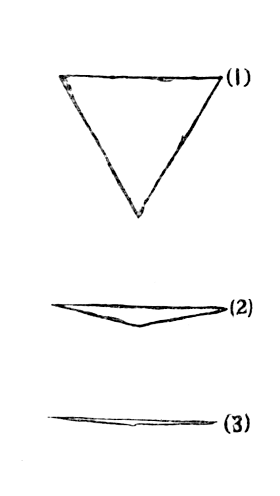
三角形を斜めから見ると、細くなって、最後は一本の線に見える。
エドウィン・アボット『Flatland』初版（1884年）第4頁の挿図／Public domain／Wikimedia Commons（縮小した）
MITATE 5｜見立て
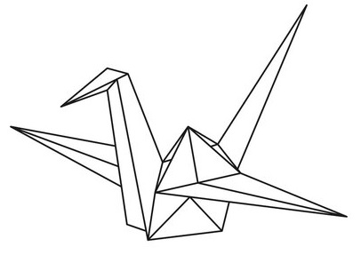
平らな紙を折って、立体の鶴ができる。
MrActiniuM（2024年、折り鶴の線画）／CC BY-SA 4.0／Wikimedia Commons（縮小した）
$\mathbb R^2$ は「2次元」と言う。その意味は「基底が2本」のはずだが、別の基底をとったら3本や1本になることはないだろうか。もし選び方で本数が変われば、「2次元」という言葉は意味をなさない。この節で、本数が基底の選び方によらないことを示す。
鍵は次の補題である。
$k$ 本の式 $\sum_{j=1}^{m}a_{ij}x_j=0$（$i=1,\dots,k$）の未知数 $x_1,\dots,x_m$ が式の数より多い（$m\gt k$）なら、$x_1=\cdots=x_m=0$ ではない解が存在する。
補題は、$k=2,\ m=3$ のとき手で確かめられる：$x_1+x_2+x_3=0$、$x_1-x_2=0$。第2式から $x_2=x_1$。第1式から $x_3=-2x_1$。$x_1=1$ とおいて $(1,1,-2)$ は $(0,0,0)$ でない解。一般の $k,m$ の証明は、掃き出し法（第17回）で行う。ここでは補題を認めて先へ進む。
図6.1 を見る。式が2本、未知数が3つの同次連立方程式は、0 でない解をもつ。
$V$ が $k$ 本のベクトル $\boldsymbol s_1,\dots,\boldsymbol s_k$ で張られているとする（$V=\operatorname{span}\{\boldsymbol s_1,\dots,\boldsymbol s_k\}$）。$V$ の中の $m$ 本 $\boldsymbol u_1,\dots,\boldsymbol u_m$ が一次独立なら、$m\le k$。
$m\gt k$ と仮定して矛盾を導く。
① 各 $\boldsymbol u_j$ は $V$ の中にあるので、$\boldsymbol s_i$ の線形結合で書ける：$\boldsymbol u_j=\sum_{i=1}^ka_{ij}\boldsymbol s_i$（$j=1,\dots,m$）。係数 $a_{ij}$ は、$\boldsymbol u_j$ を作るときの $\boldsymbol s_i$ の係数。
② $\boldsymbol u_j$ に $x_j$ を掛けて $j$ について足す：$\sum_{j=1}^mx_j\boldsymbol u_j=\sum_{j=1}^mx_j\sum_{i=1}^ka_{ij}\boldsymbol s_i=\sum_{i=1}^k\left(\sum_{j=1}^ma_{ij}x_j\right)\boldsymbol s_i$。
図6.2 を見る。2本で張る空間の中の3本は、必ず従属になる（k=2, m=3）。
③ 補題を使う。方程式は $k$ 本（$i=1,\dots,k$）：$\sum_{j=1}^ma_{ij}x_j=0$、未知数は $m$ 個で $m\gt k$。補題により、すべては0でない解 $(x_1,\dots,x_m)$ がある。
④ この解を ② の右辺に入れると、各括弧が0なので $\sum_{j=1}^mx_j\boldsymbol u_j=\sum_{i=1}^k0\cdot\boldsymbol s_i=\boldsymbol 0$。
⑤ すべては0でない係数で零が作れたので、$\boldsymbol u_1,\dots,\boldsymbol u_m$ は一次従属。これは仮定（一次独立）に反する。したがって $m\le k$。 $\blacksquare$
$V$ の2つの基底の本数は等しい。
① 基底 $\mathcal B$（$n$ 本）と基底 $\mathcal C$（$n'$ 本）をとる。② $\mathcal B$ は $V$ を張り、$\mathcal C$ は独立なので、主定理から $n'\le n$。③ 逆に $\mathcal C$ が張り、$\mathcal B$ が独立なので $n\le n'$。④ 両方から $n=n'$。 $\blacksquare$
①読み方：「ディム・ブイ」。「ブイの次元」と言う。dimension（ディメンション）の略。
②日本語での意味：ベクトル空間 $V$ の基底に含まれるベクトルの本数。6.2 の系により、基底の選び方によらず決まる。
③省略していない書き方：$V$ が基底 $\{\boldsymbol b_1,\dots,\boldsymbol b_n\}$ をもつとき、$\dim V:=n$。零ベクトルだけの空間 $\{\boldsymbol 0\}$ は、基底が「空の組」（本数0）と定めて $\dim\{\boldsymbol 0\}=0$。基底が有限本で取れない空間（連続関数の全体など）は「無限次元」と言い、第36回のフーリエ級数で扱う。
④どこで出会うか：自由度（機械の「自由度」は、動きを表す空間の次元）、行列のランク（第17回）、解空間の次元（連立方程式・微分方程式）。
(a) $\dim\mathbb R^n=n$：標準基底が $n$ 本（5.2）。
図6.3 を見る。基底の本数が、そのまま次元になる。
(b) 平面 $W=\{(x,y,z)\in\mathbb R^3\mid x+y+z=0\}$ の次元。$(x,y,z)$ から $z=-x-y$ と決まるので、自由に選べるのは $x,y$ の2つ。基底の候補：$\boldsymbol p=(1,-1,0)$、$\boldsymbol q=(0,1,-1)$。①(i) 張る：$W$ の任意の点 $(x,y,z)$ について、$x\boldsymbol p+(x+y)\boldsymbol q=(x,\ -x+x+y,\ -(x+y))=(x,y,-x-y)=(x,y,z)$。②(ii) 独立：$c_1\boldsymbol p+c_2\boldsymbol q=(c_1,\ -c_1+c_2,\ -c_2)=\boldsymbol 0$ なら、第1成分から $c_1=0$、第3成分から $c_2=0$。よって $\dim W=2$。3次元空間の中の平面は2次元、という直感と合う。
図6.4 を見る。平面 x+y+z=0 の上の点は、p と q の線形結合でただ1通りに書ける。
(c) 2次以下の多項式の全体 $\mathcal P_2=\{a_0+a_1x+a_2x^2\mid a_0,a_1,a_2\in\mathbb R\}$。多項式どうしの和と数倍は、係数ごとの和と数倍で、ベクトル空間の8つの規則を満たす。$1,x,x^2$ は基底：任意の多項式は $a_0\cdot1+a_1\cdot x+a_2\cdot x^2$ と書けて（張る）、$c_0+c_1x+c_2x^2=0$（すべての $x$ で）ならすべての係数が0（独立：$x=0$ で $c_0=0$、微分して $x=0$ で $c_1=0$、もう一度微分して $2c_2=0$）。したがって $\dim\mathcal P_2=3$。
(d) 3本の $\mathbb R^2$ のベクトルは、いつも従属：6.2 で $V=\mathbb R^2$、$k=2$（標準基底の本数）、$m=3\gt2$。たとえば $(1,0),(0,1),(2,3)$ では、$2(1,0)+3(0,1)-(2,3)=(0,0)$。
図6.5 を見る。平面の3本 (1,0), (0,1), (2,3) は、必ず従属する。
$\dim V=n$ のとき、$V$ の $n$ 本のベクトルについて、「張る」と「一次独立」は同値である。つまり、どちらか一方を確かめれば基底と言える。
この定理は証明を省略する（第17回で、ランクの言葉で証明する）。使い方：$\mathbb R^2$ の2本のベクトル $(1,2),(3,4)$ が基底かどうかは、一次独立（4.3(a)）だけを確かめればよい。
1.1 で、$\boldsymbol v=(3,1)$ は標準基底で $(3,1)$、$\mathcal B=\{(1,1),(1,-1)\}$ で $(2,1)$ だった。同じ矢印を、2通りの数の組で見ている。では別のベクトル $(5,3)$ の $\mathcal B$ での座標はいくつか。
① $c_1(1,1)+c_2(1,-1)=(5,3)$ を成分に分ける：$c_1+c_2=5$、$c_1-c_2=3$。
② 足す：$2c_1=8$、$c_1=4$。
③ 引く：$2c_2=2$、$c_2=1$。
④ 確かめ：$4(1,1)+1(1,-1)=(4+1,\ 4-1)=(5,3)$。$[\boldsymbol v]_{\mathcal B}=(4,1)$。
図7.1 を見る。同じ v=(5,3) の、基底 {b₁,b₂} に対する座標。
一般の $(x,y)$ では、同じ計算で $c_1=\dfrac{x+y}{2}$、$c_2=\dfrac{x-y}{2}$。たとえば $(3,1)$ なら $(2,1)$ で、1.1 と合う。標準基底の座標 $(x,y)$ から $\mathcal B$ の座標 $(c_1,c_2)$ へ、この2本の式で移れる。
①読み方：「ピー」。基底の取りかえの行列、または「基底変換行列」と呼ぶ。
②日本語での意味：基底 $\mathcal B$ のベクトルを列として左から順に並べた表（$n\times n$ 行列、第5回）。
③省略していない書き方：$\mathbb R^2$ で $\boldsymbol b_1=(1,1)$、$\boldsymbol b_2=(1,-1)$ なら $P=\begin{pmatrix}1&1\\1&-1\end{pmatrix}$（第1列が $\boldsymbol b_1$、第2列が $\boldsymbol b_2$）。座標 $\boldsymbol c=[\boldsymbol v]_{\mathcal B}=(c_1,c_2)$ とベクトルの関係を
$$ \boldsymbol v=c_1\boldsymbol b_1+c_2\boldsymbol b_2=P\boldsymbol c $$
と書く。右端の $P\boldsymbol c$ は、この式の意味を「$P$ の列の、$\boldsymbol c$ を係数とする線形結合」と定めた記号である（省略の段階 S4。行列の積としての一般の定義は第16回）。
④どこで出会うか：座標の回転（機械力学・ロボット工学）、行列の対角化 $P^{-1}AP$（第21回）、慣性主軸の取りかえ。
$\mathbb R^2$、$P$ が上のとき、$P\boldsymbol c$ の成分は $(c_1\cdot1+c_2\cdot1,\ c_1\cdot1+c_2\cdot(-1))=(c_1+c_2,\ c_1-c_2)$。これは 7.1 ① の左辺である。7.1 のように $P\boldsymbol c=\boldsymbol v$ を $\boldsymbol c$ について解く操作が、$P^{-1}$（逆行列、第16回）である。
図7.2 を見る。座標 c と標準の座標 v のあいだを、P で行き来する。
つまり、
「$P$ の列が一次独立でないと座標が決まらない」のは、5.3 の一意性が崩れるからである。たとえば $\boldsymbol b_1=(1,2)$、$\boldsymbol b_2=(2,4)$ では $P\boldsymbol c=(c_1+2c_2,\ 2c_1+4c_2)$ の第2成分は常に第1成分の2倍で、$(1,0)$ のようなベクトルは作れず（張らない）、作れる $(2,4)$ には係数が無数にある（$(2,0)$ も $(0,1)$ も）。
6.4(c) の $\mathcal P_2$ で、基底 $\mathcal M=(1,\ x,\ x^2)$ のとき、$p=2+3x-x^2$ の座標は $[p]_{\mathcal M}=(2,3,-1)$。導関数 $p'=3-2x=3\cdot1+(-2)\cdot x+0\cdot x^2$ の座標は $(3,-2,0)$。「微分する」という操作が、座標の組 $(2,3,-1)\mapsto(3,-2,0)$ という数の組の変換になった。各 $x^k$ の導関数 $kx^{k-1}$ が基底の線形結合なので、微分は線形である。この見方（関数の空間での演算子と行列）は、第20回の固有値問題・第36回のフーリエ級数で本格的に使う。
図7.3 を見る。多項式を基底 (1, x, x²) の座標で表すと、微分が数の組の変換になる。
$\boldsymbol u_1=(1,0,2)$、$\boldsymbol u_2=(0,1,1)$ とする。(1) $(2,3,7)$ は $\boldsymbol u_1,\boldsymbol u_2$ の線形結合か。(2) $(1,1,1)$ はどうか。(3) $\boldsymbol u_1,\boldsymbol u_2$ は一次独立か。
解答
① 線形結合は $c_1\boldsymbol u_1+c_2\boldsymbol u_2=(c_1,\ c_2,\ 2c_1+c_2)$。
② (1)：$c_1=2$、$c_2=3$ と決まる。第3成分は $2\cdot2+3=7$。目標の 7 と一致する。したがって線形結合である：$2\boldsymbol u_1+3\boldsymbol u_2=(2,0,4)+(0,3,3)=(2,3,7)$。
③ (2)：$c_1=1$、$c_2=1$ と決まる。第3成分は $2+1=3\neq1$。したがって線形結合でない。
④ (3)：$c_1\boldsymbol u_1+c_2\boldsymbol u_2=\boldsymbol 0$ なら第1成分から $c_1=0$、第2成分から $c_2=0$。したがって一次独立。
$\boldsymbol b_1=(2,1)$、$\boldsymbol b_2=(1,1)$ は $\mathbb R^2$ の基底か。基底なら $\boldsymbol v=(4,3)$ の座標 $[\boldsymbol v]_{\mathcal B}$ を求めよ。また、$\mathcal B$ での座標が $(1,-2)$ のベクトルを、標準基底の座標で言え。
解答
① 6.4 の定理（2本あれば、独立の確認だけでよい）を使う。$c_1\boldsymbol b_1+c_2\boldsymbol b_2=\boldsymbol 0$：$2c_1+c_2=0$、$c_1+c_2=0$。
② 引く：$c_1=0$。 第2式に入れて $c_2=0$。一次独立。したがって基底。
③ $\boldsymbol v=(4,3)$：$2c_1+c_2=4$、$c_1+c_2=3$。引いて $c_1=1$、$c_2=3-1=2$。
④ 確かめ：$1\cdot(2,1)+2\cdot(1,1)=(2+2,\ 1+2)=(4,3)$。$[\boldsymbol v]_{\mathcal B}=(1,2)$。
図8.1 を見る。例題2：基底 {(2,1),(1,1)} での v=(4,3) の座標。
⑤ 座標 $(1,-2)$ のベクトルは $1\cdot(2,1)+(-2)\cdot(1,1)=(2-2,\ 1-2)=(0,-1)$。
$\mathbb R^3$ の部分集合 $W=\{(x,y,z)\mid x=y\}$ は部分空間か。そうなら $\dim W$ を求めよ。
解答
① 3条件：$(0,0,0)$ は $x=y$ を満たす（条件1）。$(x,x,z)+(x',x',z')=(x+x',x+x',z+z')$ は $x=y$ を満たす（条件2）。$c(x,x,z)=(cx,cx,cz)$ もそう（条件3）。部分空間。
② $W$ の点は $(x,x,z)=x(1,1,0)+z(0,0,1)$ と書ける（張る）。
③ $c_1(1,1,0)+c_2(0,0,1)=(c_1,c_1,c_2)=\boldsymbol 0$ なら $c_1=c_2=0$（独立）。
④ 基底は $\{(1,1,0),(0,0,1)\}$ の2本で、$\dim W=2$。
図8.2 を見る。例題3：部分空間 x=y は、(1,1,0) と (0,0,1) が張る平面。
① $3\boldsymbol a=(3,-3)$、$2\boldsymbol b=(4,6)$。
② $3\boldsymbol a-2\boldsymbol b=(3-4,\ -3-6)=(-1,-9)$。
① (1)：$(2,6)=2(1,3)$。$2(1,3)-(2,6)=\boldsymbol 0$ で従属。
② (2)：$c_1+2c_2=0$、$3c_1+5c_2=0$。第1式から $c_1=-2c_2$。第2式に入れて $-6c_2+5c_2=-c_2=0$。$c_2=0$、$c_1=0$。独立。
③ (3)：$\mathbb R^2$ の3本は必ず従属（6.4(d)）。実際 $5(1,0)+7(0,1)-(5,7)=\boldsymbol 0$。
① (1)：$c(1,1,1)=(c,c,c)$。原点を通り、$x=y=z$ の直線。
② (2)：$c_1(1,0,0)+c_2(0,0,1)=(c_1,0,c_2)$。$y=0$ の点全体、つまり $xz$ 平面。
① (1)：3条件とも成り立つ（3.3 の直線と同じ）。部分空間。
② (2)：$(1,0)$ は入るが $(-1)\cdot(1,0)=(-1,0)$ は $x\ge0$ を満たさない。条件3が崩れる。部分空間でない。
③ (3)：$(1,0)$ と $(0,1)$ は入る（$xy=0$）が、和 $(1,1)$ は $1\cdot1=1\neq0$。条件2が崩れる。部分空間でない。
① 独立：$c_1+c_2=0$、$2c_1+3c_2=0$。第1式から $c_1=-c_2$。第2式に入れて $-2c_2+3c_2=c_2=0$。$c_1=0$。独立で、2本なので基底（6.4 の定理）。
② $c_1+c_2=4$、$2c_1+3c_2=9$。第1式の2倍を引く：$(2c_1+3c_2)-2(c_1+c_2)=c_2=9-8=1$。$c_1=4-1=3$。
③ 確かめ：$3(1,2)+1(1,3)=(3+1,\ 6+3)=(4,9)$。$[\boldsymbol v]_{\mathcal B}=(3,1)$。
① $P=\begin{pmatrix}1&-1\\1&1\end{pmatrix}$（第1列が $(1,1)$、第2列が $(-1,1)$）。
② $\boldsymbol c=(2,3)$：$P\boldsymbol c=2(1,1)+3(-1,1)=(2-3,\ 2+3)=(-1,5)$。
③ $\boldsymbol v=(4,0)$：$c_1-c_2=4$、$c_1+c_2=0$。足して $2c_1=4$、$c_1=2$。$c_2=-2$。確かめ：$2(1,1)-2(-1,1)=(2+2,\ 2-2)=(4,0)$。$[\boldsymbol v]_{\mathcal B}=(2,-2)$。
① $z=x+2y$ と書ける。$(x,y,z)=(x,y,x+2y)=x(1,0,1)+y(0,1,2)$。
② 張る：$W$ の任意の点が $\boldsymbol w_1=(1,0,1)$、$\boldsymbol w_2=(0,1,2)$ の線形結合。独立：$c_1\boldsymbol w_1+c_2\boldsymbol w_2=(c_1,c_2,c_1+2c_2)=\boldsymbol 0$ なら $c_1=c_2=0$。
③ 基底 $\{(1,0,1),(0,1,2)\}$、$\dim W=2$。
① $c_1\boldsymbol w_1+c_2\boldsymbol w_2+c_3\boldsymbol w_3=\boldsymbol 0$ とする。展開：$(c_1+c_3)\boldsymbol v_1+(c_1+c_2)\boldsymbol v_2+(c_2+c_3)\boldsymbol v_3=\boldsymbol 0$。
② $\boldsymbol v_i$ の独立により、$c_1+c_3=0$、$c_1+c_2=0$、$c_2+c_3=0$。
③ 第1式から第2式を引く：$c_3-c_2=0$。第3式と合わせて、$c_2+c_3=0$、$c_3-c_2=0$。足して $2c_3=0$、$c_3=0$、$c_2=0$。第1式から $c_1=0$。
④ すべて0なので、$\boldsymbol w_1,\boldsymbol w_2,\boldsymbol w_3$ は一次独立。
① $p=1\cdot1+0\cdot x+1\cdot x^2$。$[p]=(1,0,1)$。
② $\dfrac{dp}{dx}=2x$。$q=x\cdot2x=2x^2=0\cdot1+0\cdot x+2\cdot x^2$。$[q]=(0,0,2)$。
① 4.3(c) で $\boldsymbol v_1-2\boldsymbol v_2+\boldsymbol v_3=\boldsymbol 0$ と確かめた。したがって $\boldsymbol v_3=2\boldsymbol v_2-\boldsymbol v_1$。
② $\boldsymbol v_3$ は余分で、$\operatorname{span}\{\boldsymbol v_1,\boldsymbol v_2,\boldsymbol v_3\}=\operatorname{span}\{\boldsymbol v_1,\boldsymbol v_2\}$。
③ $\boldsymbol v_1,\boldsymbol v_2$ は、平行でない（$(4,5,6)$ は $(1,2,3)$ のスカラー倍でない：4倍すると第2成分が8）ので独立。
④ 基底 $\{\boldsymbol v_1,\boldsymbol v_2\}$、次元2。（3本あるのに2次元の平面になっている。）
① $\sum_{i=1}^kc_i\boldsymbol v_i+d\,\boldsymbol w=\boldsymbol 0$ とする。
② $d\neq0$ と仮定する。$\boldsymbol w=-\sum_{i=1}^k\dfrac{c_i}{d}\boldsymbol v_i$ となり、$\boldsymbol w$ が $\operatorname{span}\{\boldsymbol v_1,\dots,\boldsymbol v_k\}$ に入る。仮定に反する。
③ よって $d=0$。①は $\sum_{i=1}^kc_i\boldsymbol v_i=\boldsymbol 0$ となり、$\boldsymbol v_i$ の独立から $c_i=0$。したがって係数はすべて0。


_Shinpan_uki-e_-_Tōto_Ryōgokubashi_hanka_no_zu.jpg){kind=link}


_page_4.png){kind=link}